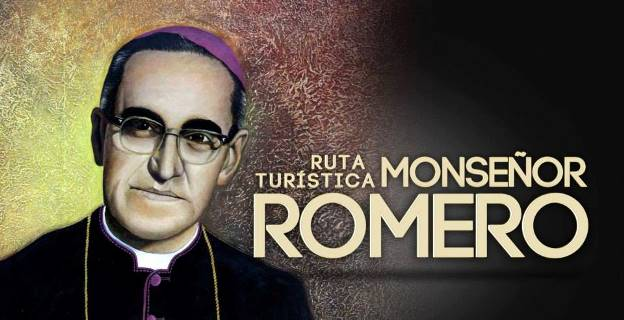
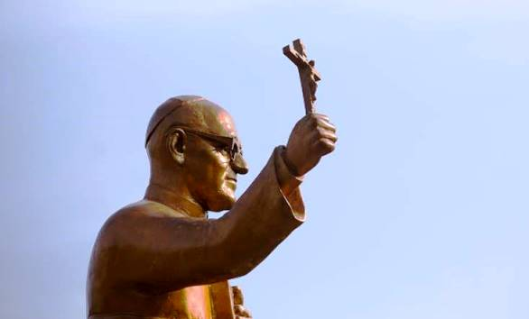
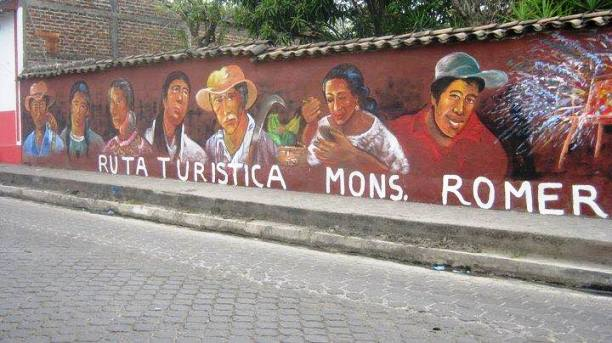

Rutas turísticas de El Salvador
El Salvador, popularmente conocido como el Pulgarcito de América, es un país que posee diversas rutas turísticas que permiten a los visitantes disfrutar de aspectos como la gastronomía, la naturaleza, el ecosistema volcánico único del país, la arqueología, la arquitectura colonial, la aventura o el surf, pueblos vivos, entre otros.
Debido a la diversidad de opciones se han creado diversas rutas turísticas de El Salvador que agrupan los destinos existentes en una zona geográfica y que comparten características en común, para que puedan ser visitados en unas pocas horas o en un solo día.
Por lo general estos recorridos se hacen por medio de guías turísticos los cuales pueden encontrarse en las localidades de la ruta o por medio de algún operador turístico salvadoreño.
La ruta turística más visitada de El Salvador es la ruta Sol y Playa que comprende la zona costera del país y en segundo lugar de popularidad se encuentra la ruta de Las Flores, la cual comprende algunos municipios del occidente del país.
Estas rutas han sido creadas para ofrecer a los turistas nacionales y extranjeros una opción para que puedan conocer y descubrir la belleza natural de los paisajes, la cultura y su gente. Al mismo tiempo el turismo contribuye al desarrollo local ya que permite la generación de empleo.
Te invitamos a conocer El Salvador por medio de sus diferentes rutas turísticas, en las cuales sin duda alguna te sorprenderás y descubrirás nuevas cosas de nuestro país.
Ruta arqueológica
Si las culturas antiguas llaman tu atención y quieres conocer más sobre ellas, no te puedes perder lo que la ruta arqueológica tiene para ofrecerte. Después de todo, este paseo por El Salvador puede transportarte a una gran variedad de culturas y costumbres que debes conocer.
Conoce la ruta arqueológica de El Salvador
Como ya debes saber, la ruta arqueológica se trata de una de las atracciones turísticas que ofrece este país latinoamericano.
Gracias a ella, quien la visite podrá llegar a conocer mucho más acerca de la vida y costumbres de la cultura Maya, Lenca y Pipil.
¿Qué debo esperar de este paseo?
Como ya dijimos más arriba, durante esta ruta podrás visitar la vasta cantidad de lugares arqueológicos que hay en el territorio salvadoreño. Por ello, podrás contar con un viaje único que te llevará a localidades y estructuras que no verás en ninguna otra parte.
Dentro del abanico de estructuras que se presentarán ante tus ojos estarán pirámides, templos ceremoniales, patios de juegos y mucho más. Asimismo, tendrás acceso a una ventana única desde la cual observar detalles de la cotidianidad de esta cultura a través de lo que dejaron atrás.
Ruta Monseñor Romero
Si deseas realizar un viaje turístico por El Salvador no podrás perderte la ruta Monseñor Romero. Después de todo, este recorrido ha sido inaugurado recientemente al conocido arzobispo Óscar Arnulfo Romero.
¿Quién fue Óscar Arnulfo Romero?
Se trató de un sacerdote católico salvadoreño que llegó a hacerme muy reconocido por su constante defensa de los derechos humanos. Se convirtió en el cuarto arzobispo metropolitano de El Salvador.
Su nombre y mensaje terminaron de darse a conocer después de que fuera asesinado en una misa en 1980. Debido a todo lo que representaba y a su trágico final, El Salvador decidió crear una ruta en su honor.
  ¿En qué consiste la ruta Monseñor Romero?
Se trató de un sacerdote católico salvadoreño que llegó a hacerme muy reconocido por su constante defensa de los derechos humanos. Se convirtió en el cuarto arzobispo metropolitano de El Salvador.
Su nombre y mensaje terminaron de darse a conocer después de que fuera asesinado en una misa en 1980. Debido a todo lo que representaba y a su trágico final, El Salvador decidió crear una ruta en su honor.
Después de su nombramiento, Óscar Arnulfo comenzó a ser reconocido como el Monseñor Romero. Es de allí de donde ha salido el título que le da nombre a esta ruta urbana.